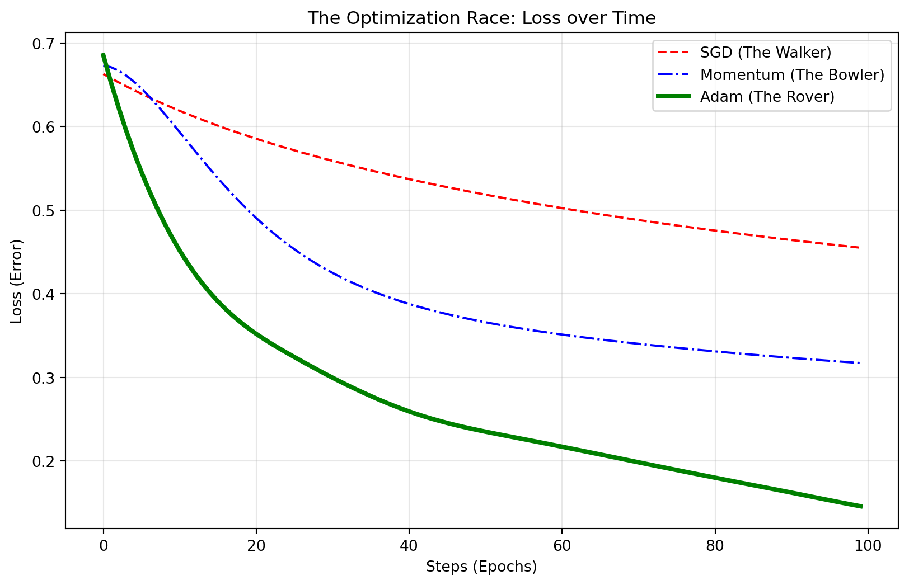

import torch
import torch.nn as nn
import torch.optim as optim
import matplotlib.pyplot as plt
import numpy as np
from sklearn.datasets import make_moons
# ==========================================
# 1. SETUP: Create the "Terrain" (Data)
# ==========================================
# We generate a "Moon" shaped dataset which is hard for linear models
X, y = make_moons(n_samples=1000, noise=0.2, random_state=42)
# Convert to PyTorch tensors (The format the hikers understand)
X_tensor = torch.FloatTensor(X)
y_tensor = torch.FloatTensor(y).reshape(-1, 1)
# ==========================================
# 2. THE HIKER (The Model Architecture)
# ==========================================
# A simple neural network with one hidden layer
def get_model():
model = nn.Sequential(
nn.Linear(2, 50), # Input: 2 coordinates -> Hidden: 50 neurons
nn.ReLU(), # Activation
nn.Linear(50, 1), # Hidden: 50 neurons -> Output: 1 prediction
nn.Sigmoid() # Probability (0 to 1)
)
return model
# ==========================================
# 3. THE RACE (Training Loop)
# ==========================================
def train_model(optimizer_name, learning_rate=0.01):
model = get_model()
criterion = nn.BCELoss() # Binary Cross Entropy Loss
# Assign the specific Hiker (Optimizer)
if optimizer_name == "SGD":
optimizer = optim.SGD(model.parameters(), lr=learning_rate)
elif optimizer_name == "Momentum":
optimizer = optim.SGD(model.parameters(), lr=learning_rate, momentum=0.9)
elif optimizer_name == "Adam":
optimizer = optim.Adam(model.parameters(), lr=learning_rate)
losses = []
# The Race: 100 Steps (Epochs)
for epoch in range(100):
# 1. Forward Pass (Make prediction)
outputs = model(X_tensor)
loss = criterion(outputs, y_tensor)
# 2. Backward Pass (Calculate Gradient)
optimizer.zero_grad()
loss.backward()
# 3. Step (Update Weights)
optimizer.step()
losses.append(loss.item())
return losses
# ==========================================
# 4. RUNNING THE RACE
# ==========================================
print("🏁 Starting the race...")
loss_sgd = train_model("SGD")
loss_momentum = train_model("Momentum")
loss_adam = train_model("Adam")
# ==========================================
# 5. VISUALIZING THE FINISH LINE
# ==========================================
plt.figure(figsize=(10, 6))
plt.plot(loss_sgd, label='SGD (The Walker)', linestyle='--', color='red')
plt.plot(loss_momentum, label='Momentum (The Bowler)', linestyle='-.', color='blue')
plt.plot(loss_adam, label='Adam (The Rover)', linewidth=3, color='green')
plt.title('The Optimization Race: Loss over Time')
plt.xlabel('Steps (Epochs)')
plt.ylabel('Loss (Error)')
plt.legend()
plt.grid(True, alpha=0.3)
plt.show()🏁 Starting the race...